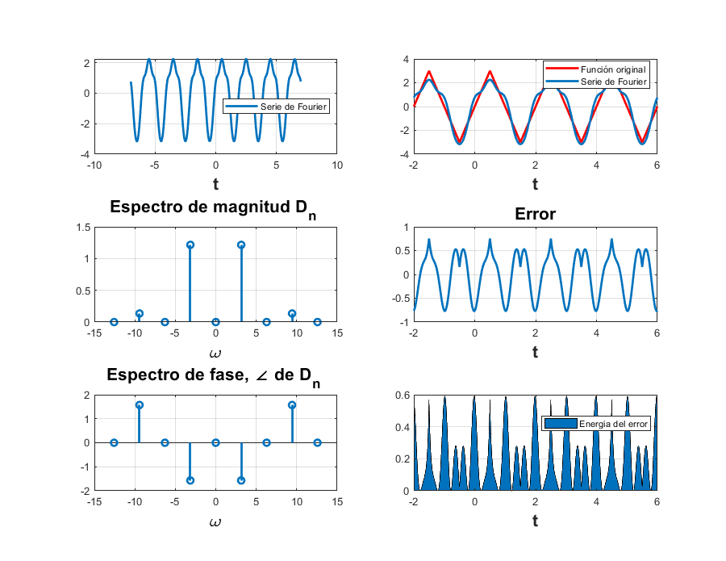
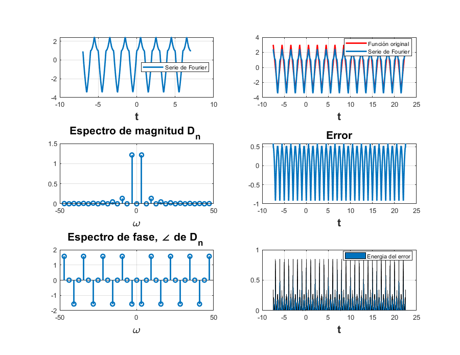

d0=0.5043;
a=-21;
b=24;
t0=0;
tf=pi;
f=@(t) ((t>0)&(t<=pi)).*exp(-t/2);
cn=@(n) 0.5043*(2/((1+16*n^2)^(1/2)));
tn=@(n) -atan(4*n);
armo=15;
so=@(t) f(t)+f(t+pi)+f(t+2*pi)+f(t+3*pi)+f(t-pi)+f(t-2*pi)+f(t-3*pi)+f(t+4*pi)+f(t-4*pi)+f(t+5*pi)+f(t-5*pi)+f(t-6*pi)+f(t+6*pi)+f(t+7*pi)+f(t-7*pi);
sfc(t0,tf,cn,d0,so,armo,a,b,tn)
C0 = 0.5043
C1 = 0.24462
C2 = 0.1251
C3 = 0.08376
C4 = 0.062915
C5 = 0.050367
C6 = 0.041989
C7 = 0.035998
C8 = 0.031503
C9 = 0.028006
C10 = 0.025207
C11 = 0.022917
C12 = 0.021008
C13 = 0.019393
C14 = 0.018008
C15 = 0.016808

Ejemplo 6.2
t0=-0.5;
tf=1.5;
armo=4;
a=-7;
b=7;
c0=0;
f=@(t) ((t>-0.5)&(t<=0.5)).*(6*t) + ((0.5<t)&(1.5>=t)).*(6*(1-t));
cn=@(n) (8*3)/((pi*n)^2);
sfcc(t0,tf,cn,c0,f,armo,a,b)
D(-4) = 0
D(-3) = 8.2722e-18+0.13509i
D(-2) = 0
D(-1) = 7.445e-17-1.2159i
D(0) = 0
D(1) = 7.445e-17-1.2159i
D(2) = 0
D(3) = 8.2722e-18+0.13509i
D(4) = 0

t0=-0.5;
tf=1.5;
armo=15;
a=-7;
b=7;
c0=0;
f=@(t) ((t>-0.5)&(t<=0.5)).*(6*t) + ((0.5<t)&(1.5>=t)).*(6*(1-t));
cn=@(n) (8*3)/((pi*n)^2);
sfcc(t0,tf,cn,c0,f,armo,a,b)
D(-15) = 3.3089e-19+0.0054038i
D(-14) = 0
D(-13) = 4.4053e-19-0.0071944i
D(-12) = 0
D(-11) = 6.1529e-19+0.010048i
D(-10) = 0
D(-9) = 9.1913e-19-0.015011i
D(-8) = 0
D(-7) = 1.5194e-18+0.024813i
D(-6) = 0
D(-5) = 2.978e-18-0.048634i
D(-4) = 0
D(-3) = 8.2722e-18+0.13509i
D(-2) = 0
D(-1) = 7.445e-17-1.2159i
D(0) = 0
D(1) = 7.445e-17-1.2159i
D(2) = 0
D(3) = 8.2722e-18+0.13509i
D(4) = 0
D(5) = 2.978e-18-0.048634i
D(6) = 0
D(7) = 1.5194e-18+0.024813i
D(8) = 0
D(9) = 9.1913e-19-0.015011i
D(10) = 0
D(11) = 6.1529e-19+0.010048i
D(12) = 0
D(13) = 4.4053e-19-0.0071944i
D(14) = 0
D(15) = 3.3089e-19+0.0054038i

Ejemplo 6.3
cn=@(n) 2/(pi*n);
f=@(t) ((t<=(pi/2))&(t>(-pi/2))).*1 + (((pi/2)<t)&(t<=(3*pi)/2)).*0;
t0=-pi;
tf=pi;
c0=1/2;
armo=4;
a=-7;
b=7;
tn=-pi;
sfccc(t0,tf,cn,c0,f,armo,a,b,tn)
D(-4) = 0
D(-3) = 0.1061-1.2994e-17i
D(-2) = 0
D(-1) = -0.31831
D(0) = 0.5
D(1) = 0.31831
D(2) = 0
D(3) = -0.1061-1.2994e-17i
D(4) = 0

cn=@(n) 2/(pi*n);
f=@(t) ((t<=(pi/2))&(t>(-pi/2))).*1 + (((pi/2)<t)&(t<=(3*pi)/2)).*0;
t0=-pi;
tf=pi;
c0=1/2;
armo=15;
a=-7;
b=7;
tn=-pi;
sfccc(t0,tf,cn,c0,f,armo,a,b,tn)
D(-15) = 0.021221-2.5988e-18i
D(-14) = 0
D(-13) = -0.024485
D(-12) = 0
D(-11) = 0.028937-3.5438e-18i
D(-10) = 0
D(-9) = -0.035368
D(-8) = 0
D(-7) = 0.045473-5.5688e-18i
D(-6) = 0
D(-5) = -0.063662
D(-4) = 0
D(-3) = 0.1061-1.2994e-17i
D(-2) = 0
D(-1) = -0.31831
D(0) = 0.5
D(1) = 0.31831
D(2) = 0
D(3) = -0.1061-1.2994e-17i
D(4) = 0
D(5) = 0.063662
D(6) = 0
D(7) = -0.045473-5.5688e-18i
D(8) = 0
D(9) = 0.035368
D(10) = 0
D(11) = -0.028937-3.5438e-18i
D(12) = 0
D(13) = 0.024485
D(14) = 0
D(15) = -0.021221-2.5988e-18i